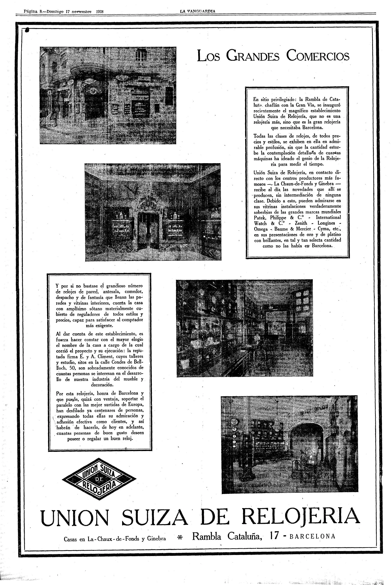
La Vanguardia · 17 de noviembre de 1928
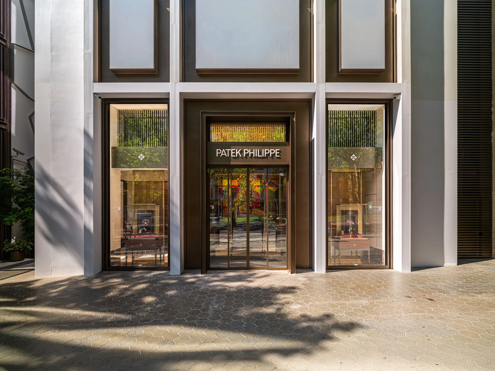
Passeig de Gràcia, 111 · 2026
En colaboración con Patek Philippe
Casi un siglo de historia, un futuro en común
Alianza desde 1928: Patek Philippe inaugura su primera boutique en Barcelona junto a Unión Suiza
Patek Philippe ha abierto en Passeig de Gràcia 111 su primera boutique exclusiva en Barcelona, gestionada por Unión Suiza. La joyería de la familia Vendrell, nacida en 1840, vende relojes de la Manufactura ginebrina al menos desde 1928, como recogen los anuncios publicados entonces en La Vanguardia.
Bajar a la introducciónLa historia compartida de Patek Philippe y Unión Suiza se remonta a 1928, cuando la firma barcelonesa, propiedad de la familia Vendrell, consolidó su vinculación con la alta relojería suiza. Desde entonces, sus caminos han seguido unidos, atravesando distintas épocas y generaciones. Lo que comenzó como una relación comercial ha ido creciendo con los años, hasta convertirse en una alianza que hoy forma parte de la historia de la alta relojería en Barcelona.
Pero lo que ha permitido mantener ese vínculo durante generaciones va más allá de la distribución de relojes: la confianza entre dos familias, el respeto por el oficio y la voluntad de dar continuidad a sus respectivas trayectorias. Ese entendimiento alcanza un nuevo hito en 2026 con la apertura de la primera boutique exclusiva de Patek Philippe en Barcelona, ubicada en Passeig de Gràcia 111 y gestionada por Unión Suiza.
Esta trayectoria compartida también ha dejado huella en las páginas de La Vanguardia. Los anuncios históricos conservados en su hemeroteca permiten recorrer algunos de los momentos más significativos de la relación entre ambas firmas y descubrir cómo ha evolucionado hasta nuestros días.
1928
01 · La gran relojería que necesitaba Barcelona
Unión Suiza vende relojes Patek Philippe en Barcelona al menos desde 1928, año en que inauguró, el 8 de octubre, su relojería de Rambla de Catalunya 17, en pleno centro de la ciudad. La firma de la familia Vendrell reforzaba así su apuesta por la alta relojería suiza con un espacio que, según anunciaba días antes en La Vanguardia, reuniría una amplia selección de las grandes marcas internacionales.
Poco más de un mes después, el 17 de noviembre, el diario dedicaba una página de su sección “Los Grandes Comercios” al recién inaugurado establecimiento. El artículo describía sus instalaciones, la variedad de relojes expuestos y el contacto directo de Unión Suiza con los centros relojeros de La Chaux-de-Fonds y Ginebra. Entre las firmas representadas, Patek Philippe figuraba en primer lugar, por delante de otros nombres destacados de la relojería suiza.
Aquella mención a Patek Philippe dejaba constancia de los primeros años de una relación que iría mucho más allá de la presencia de sus relojes en los escaparates de Unión Suiza. Con el tiempo, ambas casas estrecharían sus vínculos, construyendo una alianza que ha pasado de una generación a otra.
La campaña de apertura · otoño de 1928
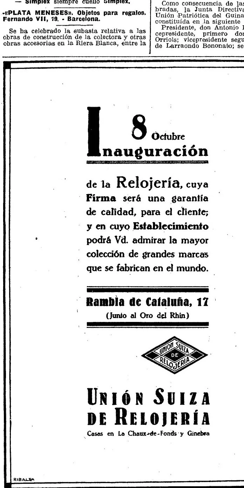
“...que no es una relojería más, sino que es la gran relojería que necesitaba Barcelona”
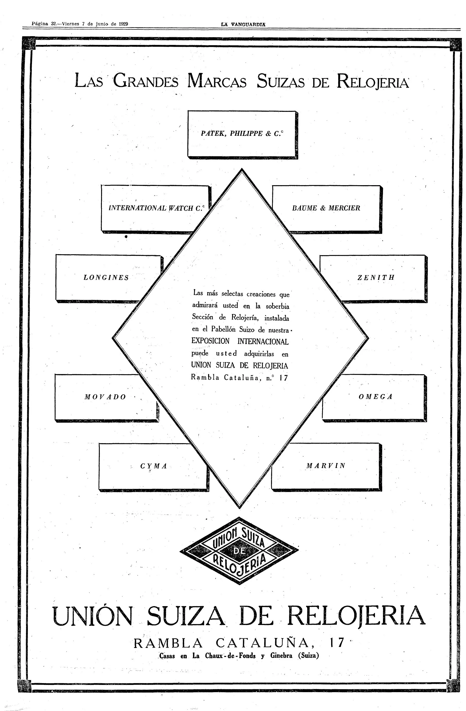
1929 · Patek Philippe, la primera de la lista
En la Exposición Internacional de Barcelona de 1929, las piezas de la sección de relojería del Pabellón Suizo podían comprarse en Unión Suiza, y Patek Philippe encabezaba la lista de nueve marcas suizas anunciadas. Así lo destacaba un anuncio publicado en La Vanguardia el 7 de junio de aquel año, una muestra de la importancia que ya tenía la Manufactura ginebrina para la casa barcelonesa.
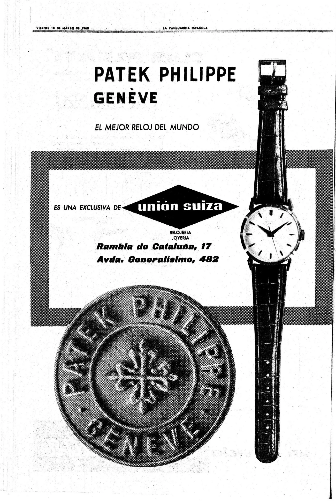
La Vanguardia · 18 de marzo de 1960
“Es una exclusiva de Unión Suiza”
Así se anunciaba en 1960 la exclusividad de Patek Philippe en Unión Suiza, un testimonio de la relación comercial entre ambas casas en aquella época.
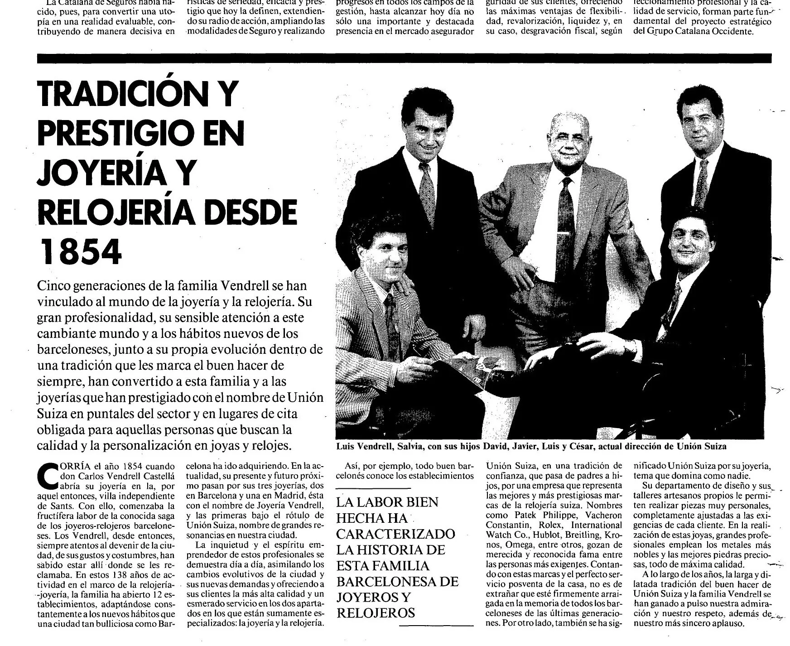
02 · Stern y Vendrell
Detrás de Patek Philippe y Unión Suiza están dos familias, los Stern y los Vendrell, que han hecho de la continuidad una parte esencial de su identidad. Los Stern, propietarios de la Manufactura ginebrina desde 1932, y los Vendrell, vinculados a la joyería y la relojería en Barcelona desde 1840, han mantenido sus empresas independientes y bajo dirección familiar, compartiendo una manera de trabajar que combina experiencia, tradición y visión de futuro.
En Patek Philippe, Thierry Stern representa la cuarta generación familiar al frente de la compañía, cuya presidencia asumió en 2009. Como sus predecesores, ha apostado por preservar la independencia de la Manufactura y un saber hacer relojero que exige tiempo, precisión y dedicación, sin renunciar a la innovación.
En Unión Suiza, la pasión por la relojería y el conocimiento del oficio se han transmitido de padres a hijos. Hoy, la sexta y la séptima generación de los Vendrell mantienen vivo el trabajo de sus antecesores, adaptándolo a una Barcelona que ha cambiado mucho desde sus primeros establecimientos.
Quizá sea esa manera de entender el oficio lo que mejor explica la relación entre ambas casas. Más allá de los relojes y los acuerdos comerciales, las familias Stern y Vendrell han construido un vínculo basado en la confianza, el respeto mutuo y el deseo de que las próximas generaciones sigan cuidando aquello que recibieron de las anteriores.
4.ª
generación Stern al frente de Patek Philippe: Thierry Stern, desde 2009
6.ª y 7.ª
generaciones de la familia Vendrell vinculadas hoy a Unión Suiza
1840
origen de la trayectoria joyera de la familia Vendrell
Dos familias que han mantenido su independencia y han transmitido de generación en generación una misma forma de entender la alta relojería.
03 · La relación, anuncio a anuncio
Desde los años cincuenta hasta bien entrado el siglo XXI, los anuncios publicados en La Vanguardia permiten seguir la evolución de la relación entre Patek Philippe y Unión Suiza. Cinco piezas de distintas épocas muestran cómo han cambiado los relojes, los mensajes publicitarios y la manera de presentarlos al público. Un recorrido que también refleja los gustos y las aspiraciones de cada momento.
1 / 5 · Desliza o haz clic en un anuncio para ampliarlo y leer la transcripción
04 · De Rambla de Catalunya a Passeig de Gràcia
Unión Suiza tiene tiendas en Barcelona desde 1840, y su historia también puede recorrerse a través de las calles de la ciudad. Todo empezó cerca de la parroquia del Carme, donde la familia Vendrell abrió su primera joyería. A medida que Barcelona crecía y cambiaban las costumbres de sus habitantes, las siguientes generaciones fueron abriendo establecimientos en distintos puntos del centro, desde las calles Ample, Hospital y Ferran hasta las Ramblas.
En 1928, la familia dio un paso importante con la apertura de la relojería de Rambla de Catalunya 17, donde Patek Philippe ocupaba un lugar destacado entre las grandes firmas suizas. En 1946 abrió sus puertas el establecimiento de Diagonal 482, que sigue formando parte de la historia y del presente de Unión Suiza.
Ocho décadas después, la nueva boutique Patek Philippe de Passeig de Gràcia 111 abre una etapa diferente en esta historia compartida. Un espacio dedicado íntegramente a la Manufactura ginebrina que muestra cómo ambas casas han sabido crecer y evolucionar juntas, estrechando sus vínculos con Barcelona sin perder aquello que las ha unido durante generaciones.
1840
Junto a la parroquia del Carme
La familia Vendrell inicia su actividad joyera en Barcelona.
1880–1921
Ample, Hospital, Ferran y las Ramblas
Las siguientes generaciones trasladan el negocio a distintas ubicaciones del centro.
1928
Rambla de Catalunya, 17
Unión Suiza inaugura un establecimiento de alta relojería con Patek Philippe entre las marcas representadas.
1946
Diagonal, 482 · Via Augusta, 1
Inaugurado el 12 de junio, es uno de los establecimientos históricos de Unión Suiza.
2026
Passeig de Gràcia, 111
Apertura de la primera boutique exclusiva de Patek Philippe en Barcelona, de la mano de Unión Suiza.
1946 · La nueva tienda de la Diagonal
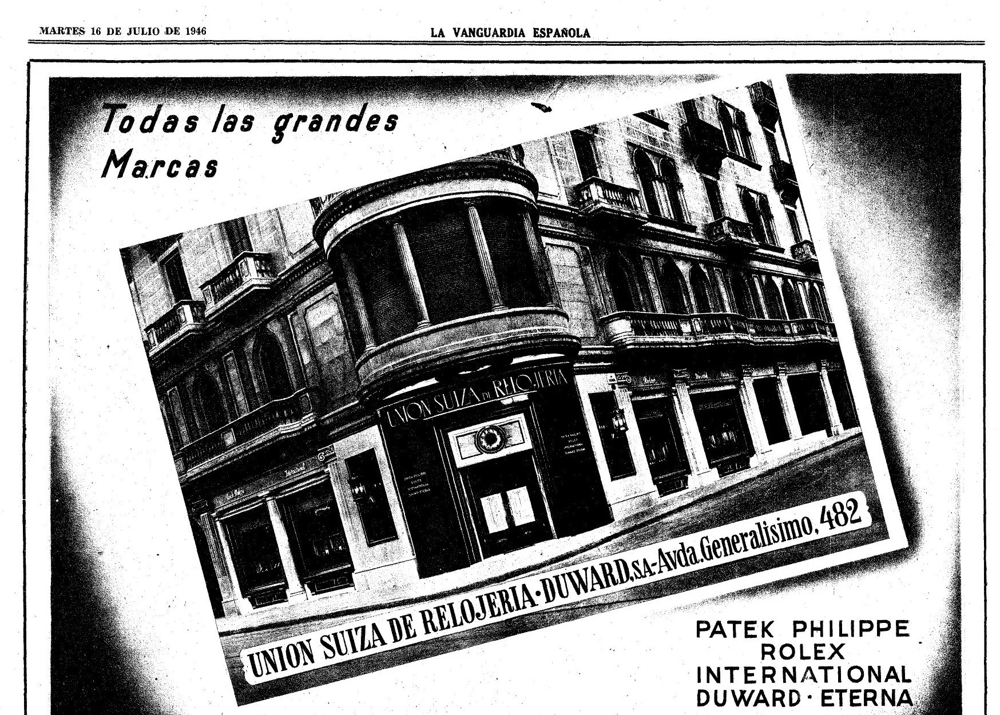
Comparador · arrastra para pasar de 1928 a 2026
2026 · Passeig de Gràcia, 111
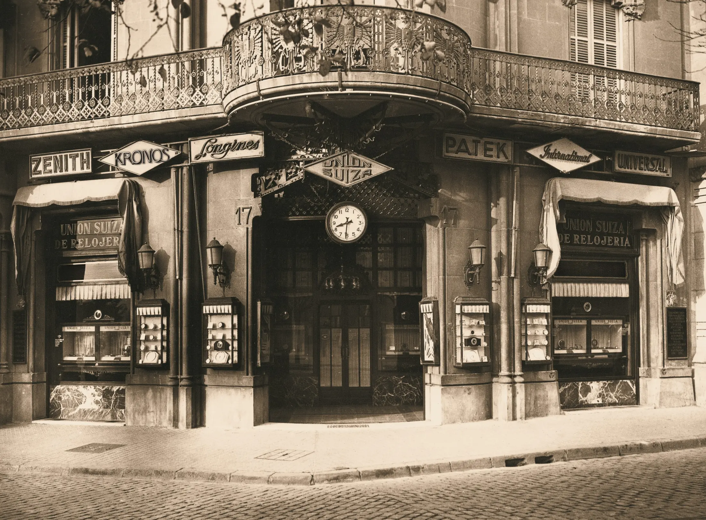
1928 · Rambla de Catalunya, 17
Casi un siglo separa ambas fachadas: de un establecimiento que reunía a las grandes firmas relojeras a un espacio dedicado exclusivamente a Patek Philippe.
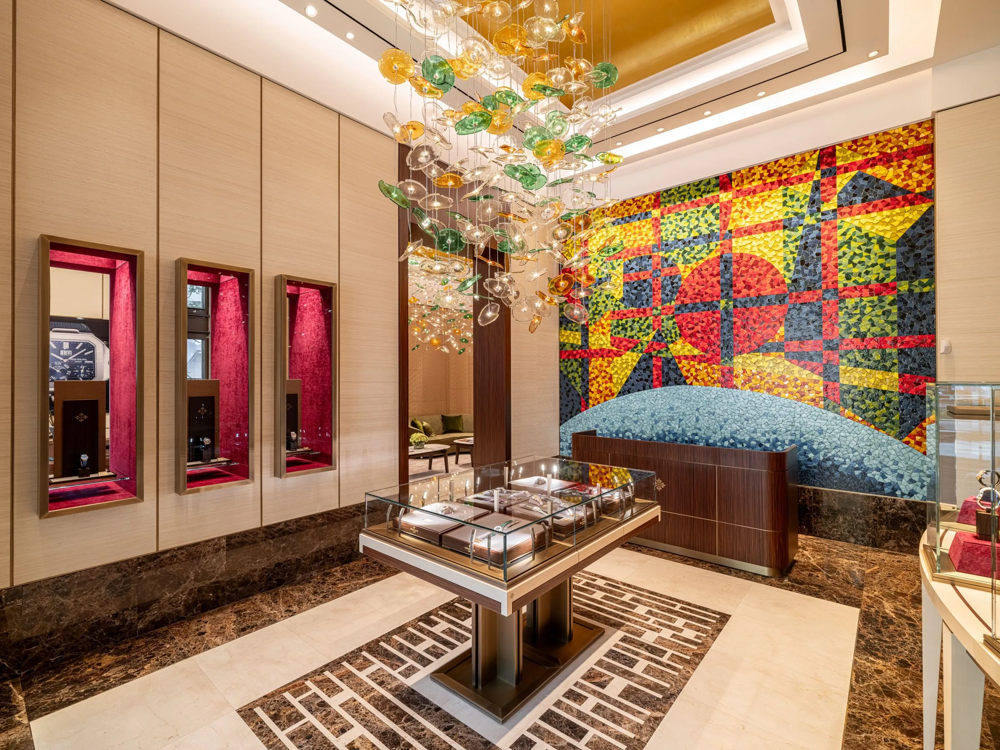
05 · La primera boutique Patek Philippe de Barcelona
En Passeig de Gràcia 111, frente a los Jardinets de Gràcia, en la planta baja del edificio del Mandarin Oriental, Patek Philippe ha abierto su primera boutique exclusiva en Barcelona, de la mano de Unión Suiza. La inauguración supone un nuevo paso en una relación que se acerca a su primer siglo de historia y reafirma el vínculo de la Manufactura ginebrina con una ciudad donde sus relojes llevan generaciones presentes.
Sus 300 m², distribuidos en dos plantas, invitan a descubrir la alta relojería con calma, en un ambiente donde cada detalle está pensado para hacer de la visita una experiencia personal. La arquitectura y el interiorismo combinan la elegancia característica de Patek Philippe con elementos que rinden homenaje a Barcelona, creando un espacio que conecta la identidad de ambas ciudades.
Uno de sus grandes protagonistas es el mosaico de Pierre Mesguich, que reinterpreta la trama urbana del Plan Cerdà mediante la técnica del trencadís. Las vidrieras evocan las formas y los colores de la Sagrada Familia, mientras que una escalera escultórica conecta las dos plantas. En una de las salas privadas, una obra de Thierry Martenon completa este diálogo entre arte, arquitectura y relojería.
Pero más allá de los materiales y las piezas artísticas, lo que define la nueva boutique es la voluntad de dedicar tiempo a cada cliente, escucharle y acompañarle en la elección de un reloj. Así lo afirma César Vendrell, sexta generación y director de la boutique: “La Boutique Patek Philippe de Barcelona es mucho más que un espacio dedicado a la Alta Relojería. Es un lugar donde queremos que cada cliente se sienta especial, donde pueda descubrir el universo de la Manufactura con tranquilidad y disfrutar de una experiencia verdaderamente personalizada. Para nosotros, el lujo está también en el tiempo que dedicamos a cada persona y en las relaciones que construimos con ella”. Una forma de entender la atención personal que Patek Philippe y Unión Suiza han cultivado durante generaciones.
Hay historias que nacen separadas… para encontrarse en el tiempo. En 1839 nace en Suiza una de las manufacturas más prestigiosas del mundo: Patek Philippe. En 1840, Jaume Vendrell y Francisca Castellá fundaban en Barcelona un taller de joyería destinado a marcar una época y dejar un legado inolvidable. Generación tras generación, la relación entre Patek Philippe y Unión Suiza se ha fortalecido durante casi un siglo. Hoy, esta historia continúa en el corazón de Barcelona, donde tradición y lujo siguen latiendo al mismo ritmo. No se trata solo de medir el tiempo. Se trata de transmitirlo.
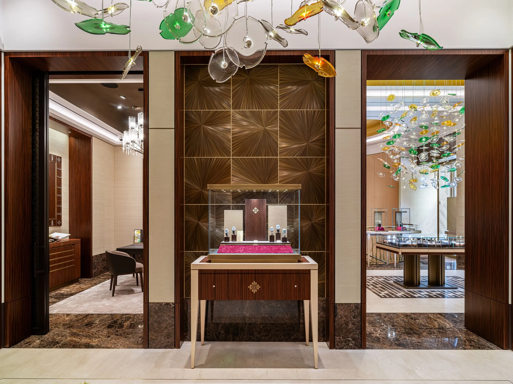
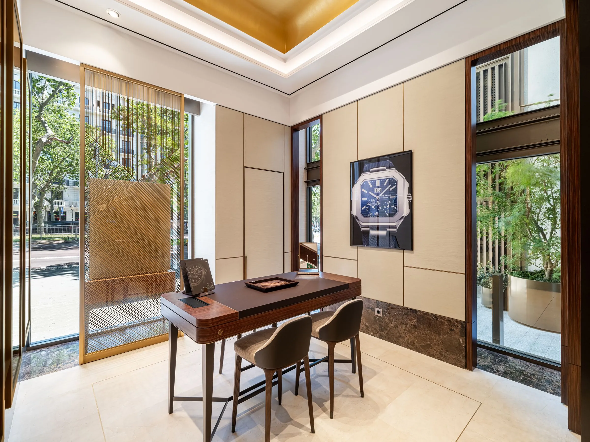
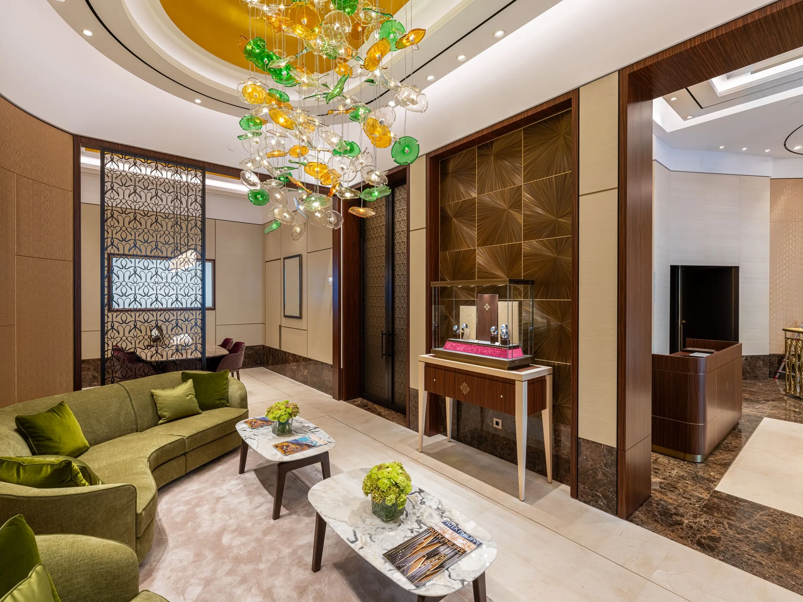
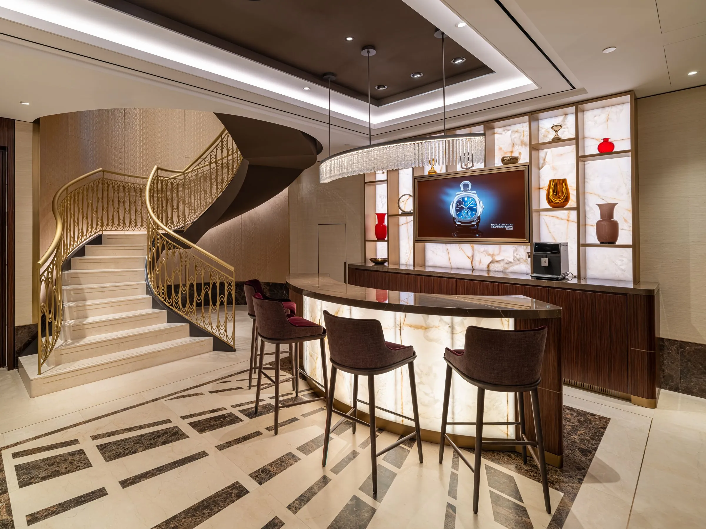
Distintos espacios de la boutique, donde la arquitectura, el arte y los detalles de inspiración barcelonesa conviven con la identidad de Patek Philippe.
“Queremos que cada cliente de la Boutique Patek Philippe de Barcelona pueda descubrir el universo de la Manufactura con tranquilidad y disfrutar de una experiencia verdaderamente memorable”
Preguntas frecuentes
No es imprescindible pedir cita para visitar la boutique Patek Philippe de Passeig de Gràcia 111. Quien lo prefiera puede solicitar cita previa para recibir una atención personalizada, pero la boutique está abierta a todos los visitantes sin necesidad de reserva.
De lunes a sábado, de 11 a 19.30 h. Teléfono: 93 052 30 00.
Sí. Además de salas privadas y zona de recepción, la boutique de Passeig de Gràcia 111 cuenta con atención posventa.
Sí. Unión Suiza mantiene su tienda de Diagonal 482, donde tiene su sede, y otra en la Gran Vía de Madrid.
Patek Philippe tiene 259 puntos de venta autorizados en el mundo, nueve de ellos en España, según datos de su presidente, Thierry Stern.
2026
06 · Una mirada al futuro
La apertura de la boutique de Passeig de Gràcia 111 no es el final de una trayectoria compartida, sino el comienzo de una nueva etapa para Patek Philippe y Unión Suiza. Después de casi un siglo de colaboración, ambas casas siguen estrechando sus vínculos con Barcelona, fieles a una manera de entender la alta relojería en la que la confianza y el trato personal ocupan un lugar esencial.
Este nuevo espacio mira hacia las próximas generaciones, con la voluntad de seguir creciendo juntas y cuidando las relaciones que han hecho posible una historia compartida que todavía tiene mucho por contar.
Passeig de Gràcia, 111 · 08008 Barcelona · De lunes a sábado, de 11 a 19.30 h · 93 052 30 00
Coordinación: Silvia Resola | Diseño y maquetación: Alejandra Santander | Redacción: Alejandra Muñoz | Fotografía y vídeo: Patek Philippe / Unión Suiza | Hemeroteca: La Vanguardia | Un proyecto de Brandslab. Godó Nexus